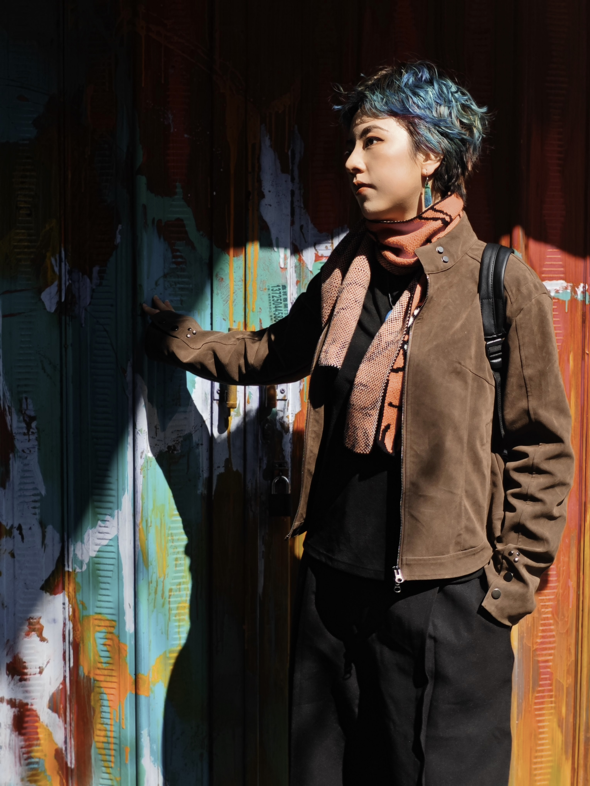

Multimedia Creator
My practice centers on a persistent question: Are boundaries properties of the world, or products of our gaze, language, and actions? Working across video, animation, performance, installation, and material experimentation, I move between the spaces of symbol and being, seeing and being seen, identity and position, instantaneous and durational.
In my works, language slips away from the page and becomes matter; acts of looking unsettle the roles of subject and object; identity is continually formed in the tension between cultural poles; and time accumulates into tangible forms through shadow, sugar, clay, and cardboard.
Rather than "breaking" boundaries, I expose how they come into being—how familiar lines are written, sustained, and subtly undone through experience, relation, and performance. For me, making art is a way to render visible the state of being in-between.